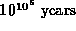

Data Structures and Algorithms
with Object-Oriented Design Patterns in Java
Data Structures and Algorithms
with Object-Oriented Design Patterns in Java
``Asymptotic analysis is nice in theory,'' you say,
``but of what practical value is it when I don't know what c and  are?''
Fallacies
are?''
Fallacies  and showed us that if we have two programs, A and B,
that solve a given problem,
whose running times are and
and showed us that if we have two programs, A and B,
that solve a given problem,
whose running times are and  say,
we cannot conclude in general that we should use algorithm A
rather than algorithm B to solve a particular instance of the problem.
Even if the bounds are both known to be tight,
we still don't have enough information.
What we do know for sure is that eventually,
for large enough n, program A is the better choice.
say,
we cannot conclude in general that we should use algorithm A
rather than algorithm B to solve a particular instance of the problem.
Even if the bounds are both known to be tight,
we still don't have enough information.
What we do know for sure is that eventually,
for large enough n, program A is the better choice.
In practice we need not be so conservative.
It is almost always the right choice to select program A.
To see why this is the case,
consider the times shown in Table .
This table shows the running times computed for a very conservative scenario.
We assume that the constant of proportionality, c,
is one cycle of a 100 MHz clock.
This table shows the running times we can expect
even if only one instruction is done for each element of the input.
| n=1 | n=8 | |||
| | ||||
|
| ||||
|
| ||||
|
|  |
 Copyright © 1998 by Bruno R. Preiss, P.Eng. All rights reserved.
Copyright © 1998 by Bruno R. Preiss, P.Eng. All rights reserved.